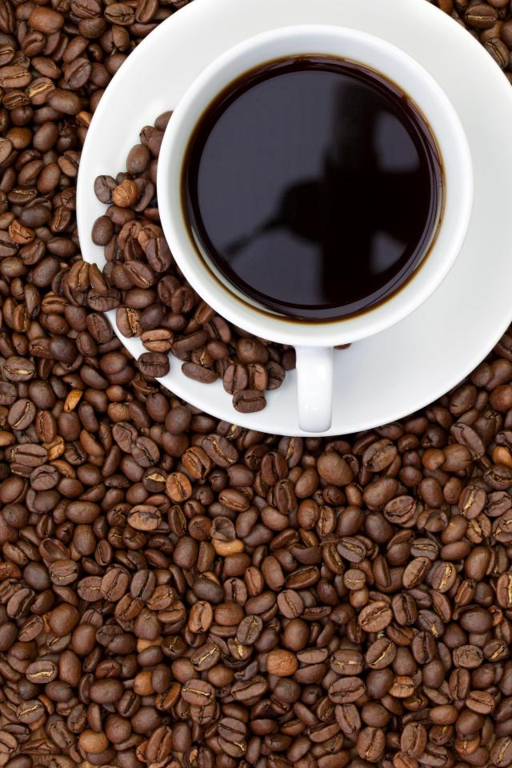

美式咖啡
“美式咖啡”（英文：Americano，意大利语：Caffè Americano）咖啡的一种，是最普通的咖啡。是使用滴滤式咖啡壶所制作出的黑咖啡，又或者是意式浓缩中加入一定比例的水制成。 美式咖啡口味比较淡。因为一般的萃取时间相对较长（大概四五分钟），所以咖啡因含量较高。美式咖啡可以帮助人提神醒脑，还因为其咖啡因含量高于其他咖啡，可以加速血液循环，缓解水肿。
饮品特点
美式咖啡浅淡明澈，几近透明，甚至可以看见杯底的褐色咖啡。 闻香观色
品尝步骤
第一步，闻香，体尝一下咖啡那扑鼻而来的浓香； 第二步，观色，咖啡最好呈现深棕色，而不是一片漆黑，深不见底； 第三步，品尝，先喝一口黑咖啡，感受一下原味咖啡的滋味，咖啡入口应该是有些甘味、微苦、微酸不涩。然后再小口小口地品尝，不要急于将咖啡一口咽下，应暂时含在口中，让咖啡和唾液与空气稍作混合，然后再咽下。